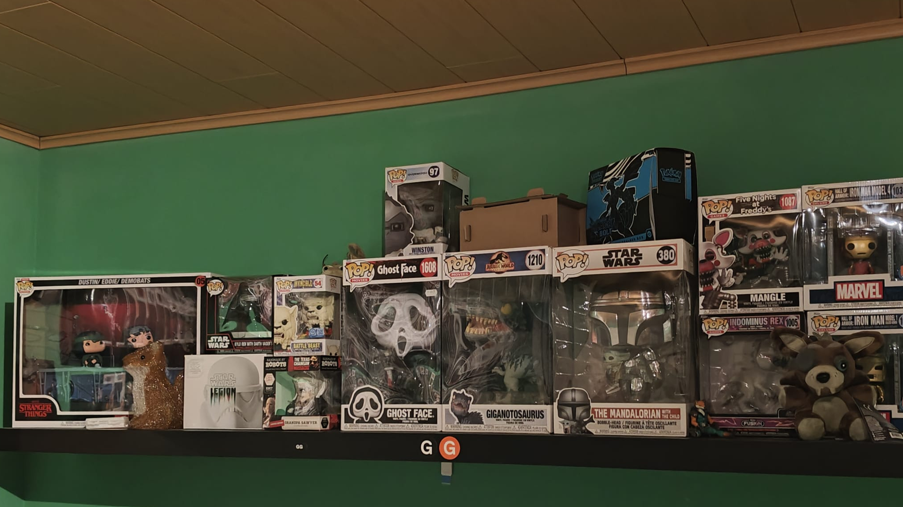
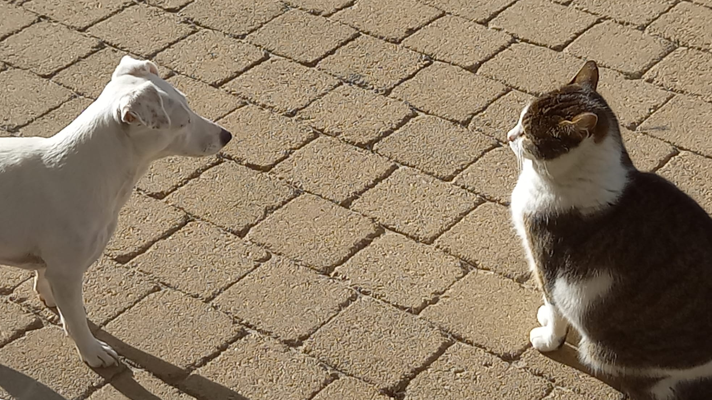
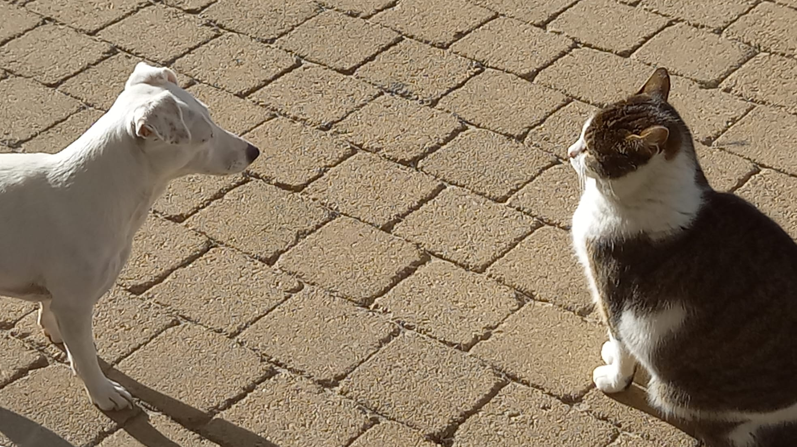
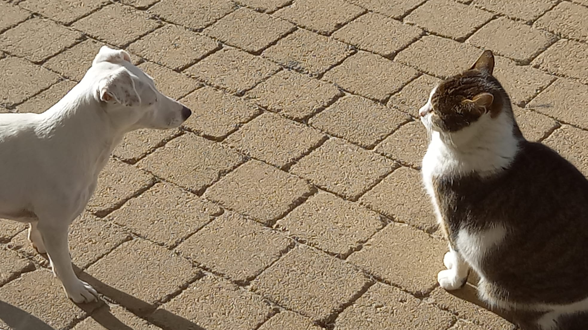
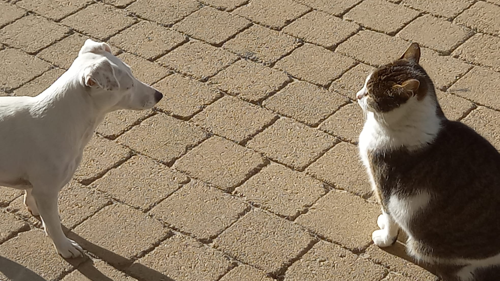

 



Ik studeer digitale vormgeving aan de PXL in Hasselt, maar waar hou ik mij nu mee bezig buiten mijn studie ? Ik hou mij buiten mijn studieuren voornamelijk bezig bij mijn vriendengroep of bij mijn sportclub. Alle tijd die ik over heb gebruik ik als ontspanning bv: gamen of tekenen. Ik ben ook een gedreven verzamelaar van allerlei verschillende verzamelobjecten, dit varieert van funko figuren naar actie figuren en verzamelkaarten. Ik ben ook een grote film/serie fanatic. Ik twijfel nog of ik na mijn studie als designer de richting televisie en film ga volgen op de C-mine Genk of dat ik verder ga als designer.
